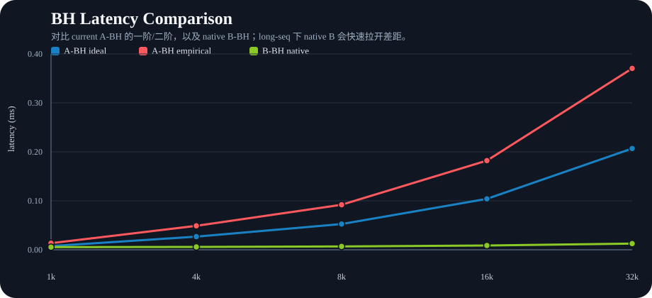
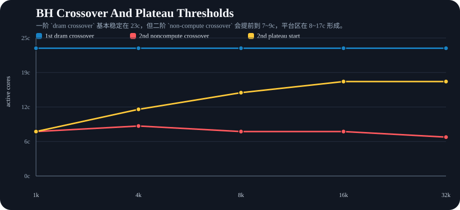
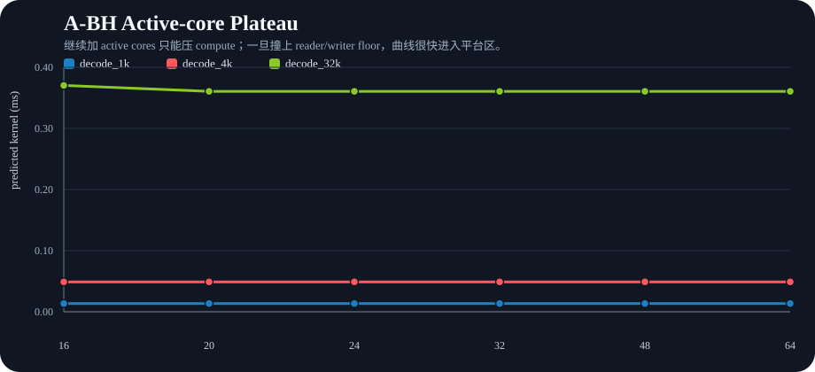
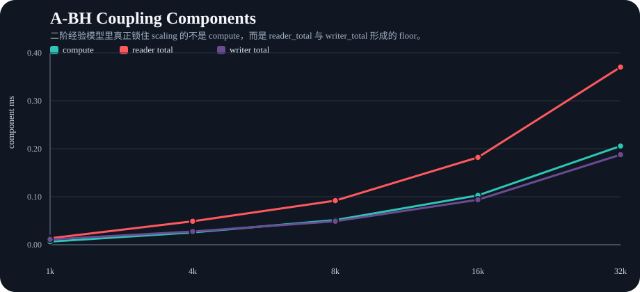

这页把 current `TT 主线 FlashMLA` 的 WH→BH 二阶经验模型、native B-BH analytical 对照，以及 active-core 平台区结论统一整理出来。由于 Part I 主方法已经切到 `DeepSeek FlashMLA`，这里仍应读作 `generic MLA backend architecture proxy`。




说明：Part IV 的 architecture projection 主要回答 generic MLA backend 在 future hardware 上最先撞到哪类资源平衡问题，不应直接等同为 `DeepSeek FlashMLA` 的 direct BH benchmark。